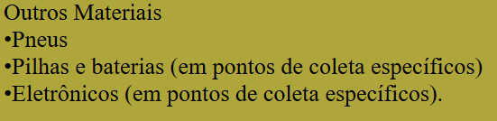

Papéis
•Cadernos, papéis de escritório, fotocópias, cartões
•Jornais, revistas, correspondências, envelopes
•Papéis de embrulho, papel de seda, sacolas e sacos de papel
•Papelão, cartolinas, embalagem de ovo
•Papel kraft, papel heliográfico, papel filtrante, papel de desenho
Plásticos
•Garrafas PET, embalagens de produtos de limpeza, potes de alimentos
•Sacos plásticos, filmes plásticos, tampas de plástico
•Brinquedos, utensílios domésticos de plástico
Vidros
•Garrafas de bebidas, frascos de alimentos, potes de vidro
•Vidros de janelas, espelhos (sem moldura)
Metais
•Latas de alumínio (refrigerantes, cervejas)
•Latas de aço (conservas, alimentos)
•Objetos de metal, como utensílios de cozinha
